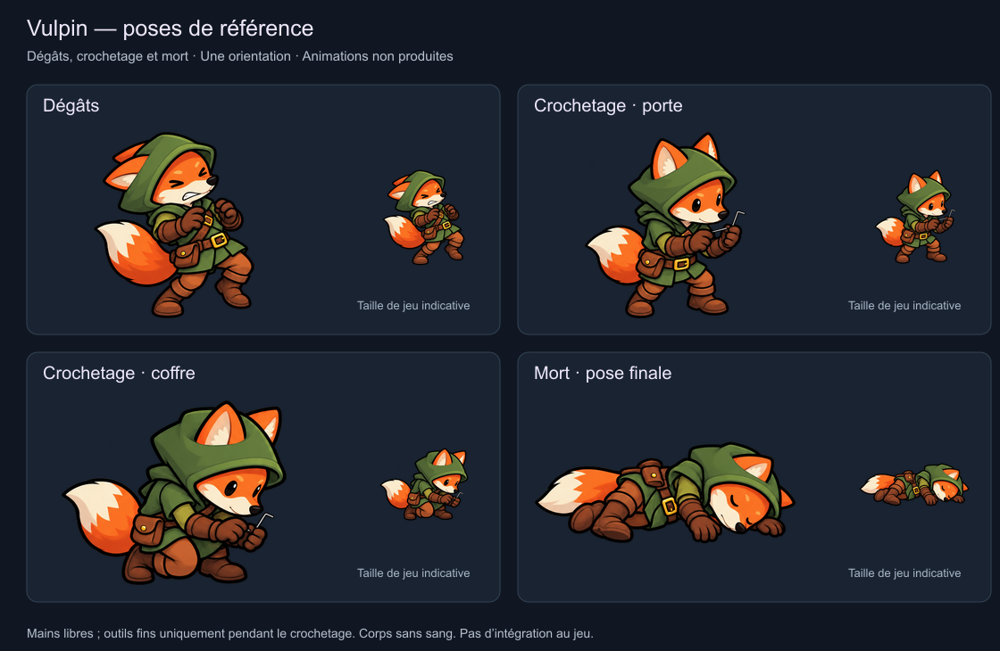

Vulpin — dégâts, crochetage et mort
Quatre poses de référence du même voleur sans armes. Les petits outils apparaissent uniquement pendant le crochetage. Il s’agit d’une proposition de dessin dans une orientation ; les cycles animés et leur intégration restent à produire.

Comportement prévu
| État | Présentation | Raccord au jeu |
|---|
| Dégâts | Bref recul, oreilles rabattues, puis reprise de l’action. | À déclencher lors d’une perte de vie non mortelle. Réaction visuelle sans ajouter de recul physique ni de délai de simulation. |
| Crochetage d’une porte | Debout, mains réunies à hauteur de serrure. | État lockpicking existant, tentative d’environ 3,03 s. Les outils restent fins et non offensifs. |
| Crochetage d’un coffre | Accroupi, mains et regard abaissés. | Même état, cible coffre. L’animation de prélèvement de l’or sera distincte du crochetage. |
| Mort | Chute à animer, puis corps immobile au sol. La planche montre la pose finale. | Phase dying existante de 1,5 s, puis corps conservé dans la simulation. La pose finale remplacera le repère actuel lors de l’intégration. |
Suite de la préparation
Les mains devront être alignées sur les serrures réelles des portes et des coffres. Les petites vues partagent la même réduction uniforme, mais les cadres sont centrés pour cette revue : ils ne constituent pas encore des images d’animation enregistrées sur un même point d’appui. Marche, course, dégâts, crochetage et chute devront ensuite être déclinés suivant les directions de déplacement.
Sources
Créé avec l’outil ImageGen intégré à partir du Vulpin sans armes. Planche originale transparente · Prompt exact · Métadonnées des poses.
Les quatre silhouettes sont découpées avec une marge de huit pixels, sans repeindre les pixels ni modifier leur transparence. Les poses et les petites vues ont été inspectées. Aucun changement de comportement, de sprite de production, de sauvegarde ou d’APK ; pas de commit ni de push.